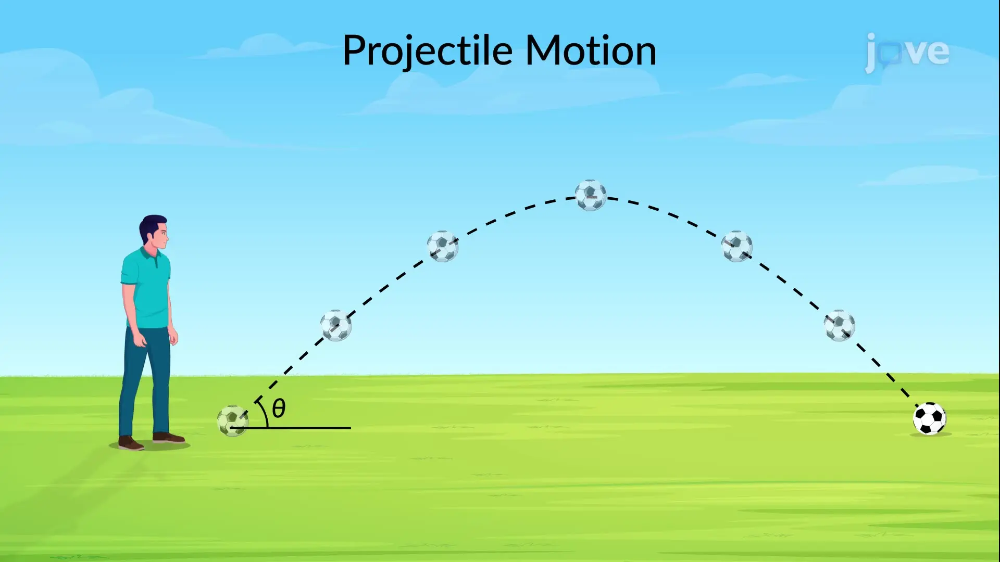

Physics in Focus · Year 12 · Chapter 2
Projectile motion
Build intuition for the flight path, one question at a time.

01 · Select all
Multiple selection
02 · Classify
Matrix grid
03 · Recall
Fill the blank
Multiple selection
Question 1 of 20
Check answer
Previous
Next
Dr King Wunna